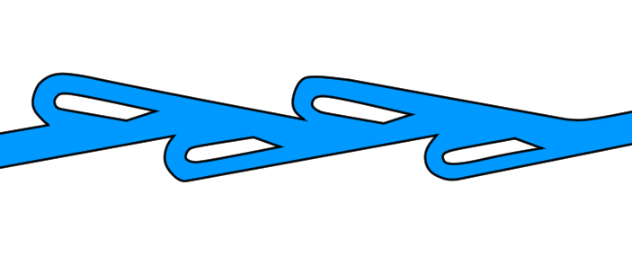

…と聞いたら驚かれますでしょうか？
スマホも、タブレットも、パソコンも、全て「コンピューター」らしいものは、普く電気で動いています。電気は軽く、送りやすく、使いやすいという性質から、世界中の「コンピューター」にとって電気は不可欠なもののように思えます。
実は（これは「コンピューター」の定義にもよるのですが）
ですが、本当にそれが電気である必要はあるのでしょうか？
電気には多数のメリットがある一方で、
などのデメリットもあり、電気に拠らないコンピュータというものが議題に上ることもごくまれにあるのです。
電気以外の大抵の情報伝達手段というのは、電気の足元にも及ばず顧みられることすらないのですが、一方で水コンピュータというのは電気と同じ土俵に立てるぐらいにはメリットがあり、またロマン溢れる存在であるので、よくその手の話に登場します。
水コンピュータの何がいいのかというと、まず第一に導電体を必要としないということが挙げられます。
これによって、
など新たな可能性が広がります。
さらに、設計次第では発熱量が大幅に抑えられる可能性もあり、もしこれが本当ならば、透明な素材が使えることと合わせて三次元への拡張ができるかもしれません。
ダイオード。 それはコンピュータには絶対に欠かせない部品です。
ダイオードの役割は、ある方向の電流の見通し反対の電流は通さないという一見単純なものですが、電気コンピュータにおいてもこの製作は困難を極めました。
今ではダイオードは半導体技術の躍進によって非常に安価かつ小型のものが手に入るようになりましたが、かつては小さな消しゴムぐらいの大きさで制御の難しい真空管を使わざるを得ませんでした。或いは鉱石ラジオの鉱石検波器の部分もダイオードの一種ですが、そのようなとても集積はできないような部品を用いてしか実現できなかったのです。
水コンピュータにおいても同様の問題が考えられます。
水コンピュータを構成するものは基本的には単なる管のみですが、ただの管ではとてもダイオードのような性質を持った部品は作れそうにありません。 その場合、しかたがないので静脈についているような弁を管に設ければ何とかなるように思えますが、しかし、弁のような可動部は繰り返す物理的衝撃を受けると、普通は摩耗し壊れてしまいます。 そうで無くても弁のような部品にはある程度の大きさが必要ですから、電気コンピュータにおける真空管のような性能のボトルネックとなりかねないのです。
さて本題です。
テスラバルブは1920年、天才発明家と云われ交流電力システムの普及や無線操縦、蛍光灯の研究、ネオンサインの使用、誘導（交流無整流子）電動機、テスラコイル発明に至るまで多くの功績がある二コラ・テスラが開発し特許を取得したもので、前述のバルブで問題となった可動部、のない逆止弁です。
構造は下の図のようになっています。

右から来た流体はまず最初の分岐に会いますが、液体はその流速が速くなる方向に進むので渦を作りにくく、抵抗も少なく通過できます。 次に合流地点では液体は流速が多少遅くなるかもしれませんが、2つの流れは同じ方向に流れているのでこれまた渦はできにくく、抵抗は小さいです。
一方、左から来た流体は分岐で別れ、やがて合流地点で"正面衝突"します。 さらに流速は遅くなるので流体のそれぞれの粒子が運動エネルギーを余らせてそのエネルギーで渦を作り始めます。 渦は基本的にはエネルギーの無駄づかいで、流体の抵抗の主な原因となるものですので、この渦によって大きな抵抗が生まれ、結果左からは通りにくく、右からは通りやすいという機構がバルブなしで実現できるわけです。
水コンピュータに限らず、バルブの可動部というのは常にその流体輸送系において特に故障しやすい部位であり、可動部を減らすというのは設計においてとても大切なことですから、このテスラバルブというのは全ての配管系において応用の余地のある発明なのです。
実物は実験室に。
そんなすごいテスラバルブを実際に作ってみました。
結果的には、ただ単にチューブをコネクターでつなげただけのシロモノになってしまいましたが、これは手抜きが原因だけではなく、高圧の水を使用するので既製品を使用しなければ水漏れがひどいという問題があったためでもあります。
正直機能しているのかしていないのかも分からないような性能です。
原因は恐らく管の形状および水圧の不足で、テスラバルブは本来かなりの低速で機能するのですが形状が簡略化されたためにその性能を損ない、さらに水圧があまり出ないのであるべき乱流が発生していないようです。
蛍光灯や交流電力システムなど現代においても恩恵がある二コラ・テスラの発明品テスラバルブですが、全くと言っていいほど利用されません。 Googleでの検索ヒット数も約85000件（執筆時点）と、他の功績と比べると低いですし、Wikipediaの記事さえありません。 特許が取得されているので使いづらいという点もあるのかもしれませんが、実際に作ってみたところいろいろなデメリットがあることが分かりました。
たとえば、
などなど。 実際に製作は難航し、何度か設計から見直しを迫られました。
ネット上では潮汐発電に利用できるのではないかとの意見もありましたがゴミが多かったり、メンテナンスコストに見合わなかったり、逆流のせいで効率が落ちたりと、使用されることはないように思えます。
そういえば、気泡や沈殿のメンテナンスが必要ということは、テスラバルブの最大のメリットである可動部がなくメンテナンスが不要という特性が上手く発揮できないということですから、なかなか使いづらいのかもしれません。
しかし、一方で最近ではテスラバルブに水流の交直流変換回路の部品としての効果が期待できることが実験で明らかになり、今後上述のデメリットを克服できるような分野での応用は十分に見込めると思います。
これからのテスラバルブの利用に注目です。